1088D53 RIGID SUPPLY OR RETURN PIPES FOR ENGINE OIL HEAT EXCHANGER - R.R.
- Path
- Procedures > 10 ENGINE > 1088 ENGINE COOLING > 1088D COOLANT PIPES AND HOSES > 1088D53 RIGID SUPPLY OR RETURN PIPES FOR ENGINE OIL HEAT EXCHANGER - R.R.
- Kind
- repair procedure (removal / refitting; the operation number is the code)
- Applies to
- engines: 3.0 24V V6; all production periods
- Interactive page
- https://sloeber94.github.io/elrnDB-fUlss/en/#/179007192
Applies to: engines: 3.0 24V V6; all production periods
 Removing
Removing
 Refitting
Refitting- Position the vehicle on the lift.
- Disconnect the negative battery terminal.
Description | Connector | |
|---|---|---|
. | Battery | A001B |
Op. 5010B18 CLIMATE CONTROL UNIT AIR INTAKE - R.R.
Op. 5050B34 WINDSCREEN WIPER ARM/S COMPLETE WITH BLADE - R+R
Op. 7210E22 WINDSCREEN BASE TRIM
Op. 1016A42 LEFT HAND CYLINDER HEAD IGNITION COIL COVER - R+R
Op. 1048A47 SLEEVE FROM RIGID PIPE TO THROTTLE BODY - R R
See in Op. 1048A10
Op. 7055B54 UNDER-ENGINE GUARD - R R
1. Disconnect the electrical connection from the engine coolant temperature sensor.
Description | Connector | |
|---|---|---|
1 | Engine coolant temperature sensor/sender unit | K036 |
2. Disconnect the electrical connection from the engine rpm sensor.
Description | Connector | |
|---|---|---|
2 | Rpm sensor | K046 |
3. Disconnect electrical connections (3a) for the knock s ensor on the lh head and (3b) for knock sensor on rh head.
Description | Connector | |
|---|---|---|
3a | Detonation sensor | K050 |
Description | Connector | |
|---|---|---|
3b | Detonation sensor -2 | K051 |
4. Disconnect the electrical connection from reference sensor for cylinder - 1 on lh head.
Description | Connector | |
|---|---|---|
4 | Cylinder reference sensor - 1 | K168 |
5. Undo the bolt, remove the retaining collar and move the wiring out of the working area.
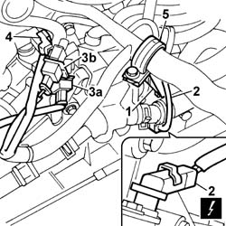
Applies to: engines: 3.0 24V V6; all production periods
1. Working on lh head, flyhweel side, disconnect the electrical connection of the lower lambda sensor on the lh converter.
Description | Connector | |
|---|---|---|
1 | Lambda sensor on catalyzer | K017 |
2. Undo bolts (2a) and remove wiring channel (2b) on lh head.
- Release wiring and move out of working area.
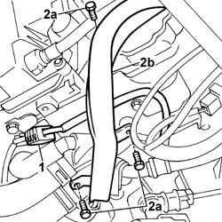
Applies to: engines: 3.0 24V V6; all production periods
- Position a suitable container for collecting the engine coolant.
1. Use an appropriate tool to loosen retaining collar (1a), disconnect lower sleeve (1b) from the radiator and drain the coolant into the container.
 | Description | Code | Function |
|---|---|---|---|
1a | Caliper | 1.881.138.000 | Band opening |
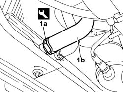
Applies to: engines: 3.0 24V V6; all production periods
- Protect the radiator using stiff card.
1. Undo retaining bolts (1a), disconnect retaining bands (1b) and move air conditioning system pipe (1c).
2. Undo retaining bolts and move the front brackets securing the engine.
3. Undo the fastening bolts (3a) and remove the heat shield (3b) for the exhaust pipe.
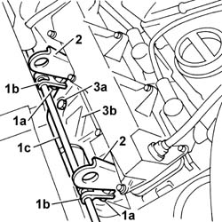
Applies to: engines: 3.0 24V V6; all production periods
1. Undo the nuts fixing the preconverter to the exhaust manifold.
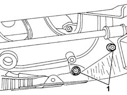
Applies to: engines: 3.0 24V V6; all production periods
1. Working beneath the vehicle, unscrew the remaining bolt securing the preconverter to the exhaust manifold.
- Slightly lowe the preconverter to aid rigid pipe removal operations.
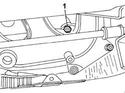
Applies to: engines: 3.0 24V V6; all production periods
- Working on the engine, flywheel side:
1. Use an appropriate tool to loosen retaining band (1a) and disconnect pipe (1b) carrying engine oil to the heat exchanger to the thermostat unit.
| Description | Code | Function |
|---|---|---|---|
1a | Caliper | 1.881.138.000 | Band opening |
2. Use an appropriate tool to loosen retaining band (2a) and disconnect return pipe (2b) carrying engine oil back from the heat exchanger to the coolant manifold on the cylinder head.
| Description | Code | Function |
|---|---|---|---|
2a | Caliper | 1.881.138.000 | Band opening |
3. Undo the fixing bolts (3a) and move the pipe mounting bracket (3b) aside.
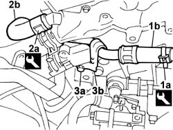
Applies to: engines: 3.0 24V V6; all production periods
- Raise the vehicle.
1. Loosen retaining band (1a) and disconnect delivery and return pipes (1b) from and to the oil heat exchanger.
| Description | Code | Function |
|---|---|---|---|
1a | Caliper | 1.881.138.000 | Band opening |
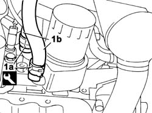
Applies to: engines: 3.0 24V V6; all production periods
1. Undo the fixing bolts (1a) and detach the pipe mounting bracket (1b) from the crankcase.
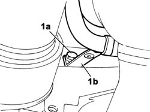
Applies to: engines: 3.0 24V V6; all production periods
- Remove the rigid delivery and return pipes to the engine oil heat exhanger from the car.
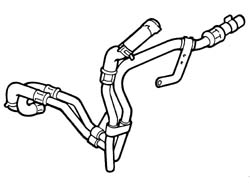
Applies to: engines: 3.0 24V V6; all production periods
Refitting
Removing- Fit the rigid delivery and return pipes to the engine oil heat exhanger from the car.
- Connect the oil heat exchanger rigid delivery and return pipes and restore the retaining bands using the appropriate tool.
| Description | Code | Function |
|---|---|---|---|
. | Caliper | 1.881.138.000 | Band opening |
- Position the pipe holder bracket to the crankcase and tighten the fixing bolt.
- Lower the vehicle
- Connect the rigid delivery and return pipes from the engine oil heat exchanger to the thermostat unit and coolant manifold on the cylinder head and restore the retaining bands using the appropriate tool.
| Description | Code | Function |
|---|---|---|---|
. | Caliper | 1.881.138.000 | Band opening |
- Position the pipe holder bracket and tighten the fixing bolt.
1. Replace the gasket (1a) between the exhaust manifold and the pre-catalyzer and bend the tabs (1b) behind the exhaust manifold flange to secure it in the correct fitting position.
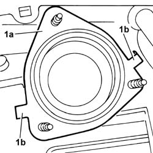
Applies to: engines: 3.0 24V V6; all production periods
- Fit hte preconverter and tighten the nut to the exhaust manifold.
- Lower the vehicle.
- Tighten the nuts fixing the preconverter to the exhaust manifold.
- Tighten the nuts securing the preconverter to the exhaust manifold to the specified torque.
 | Value - daNm | Fastening | Component | Ø |
|---|---|---|---|---|
. | 3,3 | Nuts | LEFT CATALYTIC PRECONVERTER - R.R. | - |
- Position the heat shield on the exhaust manifold and tighten the bolts.
- Fit the front engine anchorage brackets and tighten the bolts.
- Position the air conditioning system pipe and tighten the anchorage band bolts
- Remove the protective card.
- Connect the lower sleeve to the radiator and restore the retaining band.
| Description | Code | Function |
|---|---|---|---|
. | Caliper | 1.881.138.000 | Band opening |
- Position the wiring channel to the lh head and tighten the bolts.
- Arrange the wiring.
- Connect the electrical connection for the lower Lambda sensor on the lh preconverter.
Description | Connector | |
|---|---|---|
. | Lambda sensor on catalyzer | K017 |
- Position the wiring anchorage bracket and tighten the fixing bolt.
- Connect the electrical connection from reference sensor for cylinder - 1 on lh head.
Description | Connector | |
|---|---|---|
. | Cylinder reference sensor - 1 | K168 |
- Connect the electrical connection for the detonation sensor on the lh head.
Description | Connector | |
|---|---|---|
. | Detonation sensor | K050 |
- Connect the electrical connection for the detonation sensor on the rh head.
Description | Connector | |
|---|---|---|
. | Detonation sensor -2 | K051 |
- Connect the electrical connection for the engine rpm sensor.
Description | Connector | |
|---|---|---|
. | Rpm sensor | K046 |
- Connect the electrical connection to the engine coolant temperature sensor.
Description | Connector | |
|---|---|---|
. | Engine coolant temperature sensor/sender unit | K036 |
Op. 7055B54 UNDER-ENGINE GUARD - R R
See in Op. 1048A10
Op. 1048A47 SLEEVE FROM RIGID PIPE TO THROTTLE BODY - R R
Op. 1016A42 LEFT HAND CYLINDER HEAD IGNITION COIL COVER - R+R
Op. 7210E22 WINDSCREEN BASE TRIM
Op. 5050B34 WINDSCREEN WIPER ARM/S COMPLETE WITH BLADE - R+R
Op. 5010B18 CLIMATE CONTROL UNIT AIR INTAKE - R.R.
- Connect the negative battery terminal.
Description | Connector | |
|---|---|---|
. | Battery | A001B |
Op. 0010T21 COOLANT CHECK DENSITY AND TOP UP IF NECESSARY
- Remove the vehicle from the lift.
Topics linked from this page (7)
- 0010T21 ENGINE COOLANT - CHECK DENSITY AND CHANGE, IF NECESSARY
- 1016A42 LEFT HAND CYLINDER HEAD IGNITION COIL COVER - R+R
- 1048A47 SLEEVE FROM RIGID PIPE TO THROTTLE BODY - R R
- 5010B18 CLIMATE CONTROL UNIT AIR INTAKE - R.R.
- 5050B34 WINDSCREEN WIPER ARM/S COMPLETE WITH BLADE - R+R
- 7055B54 UNDER-ENGINE GUARD - R R
- 7210E22 WINDSCREEN BASE TRIM